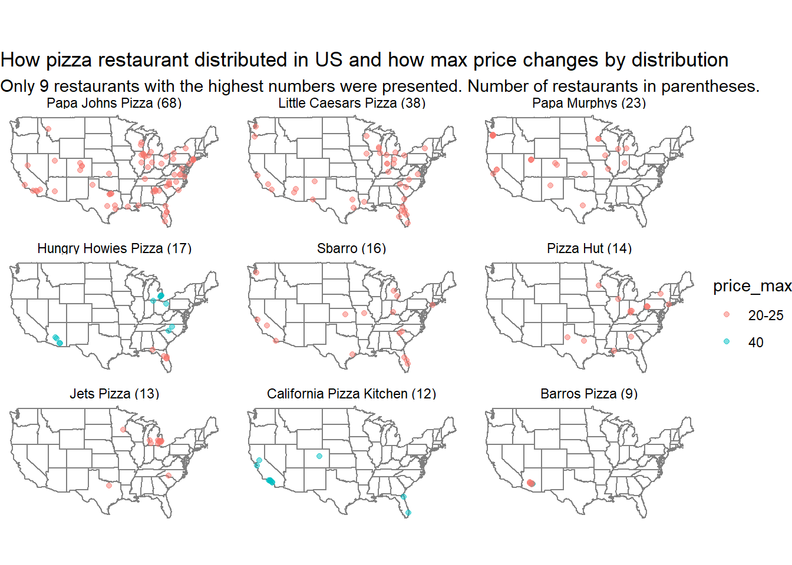
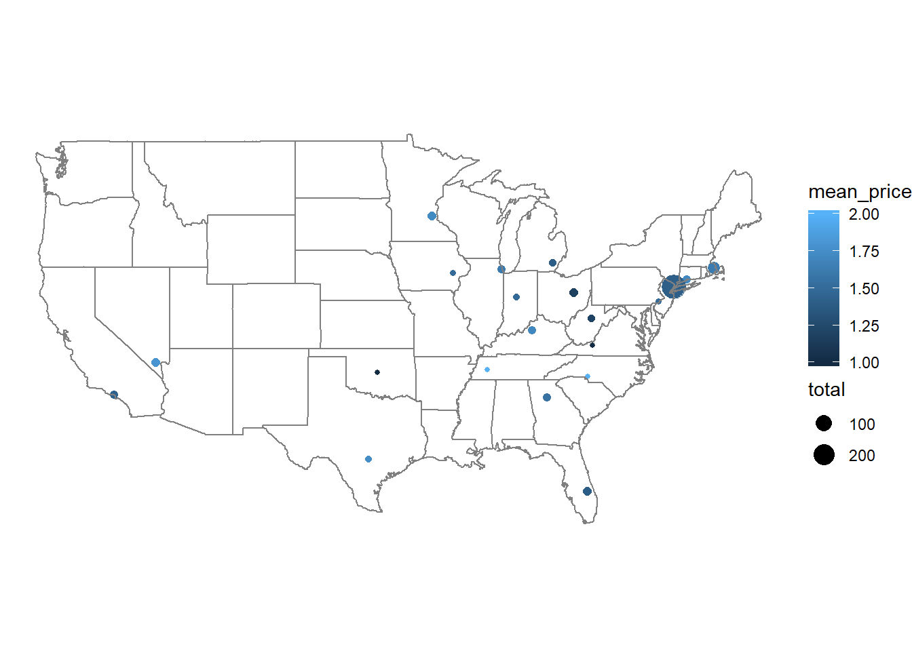
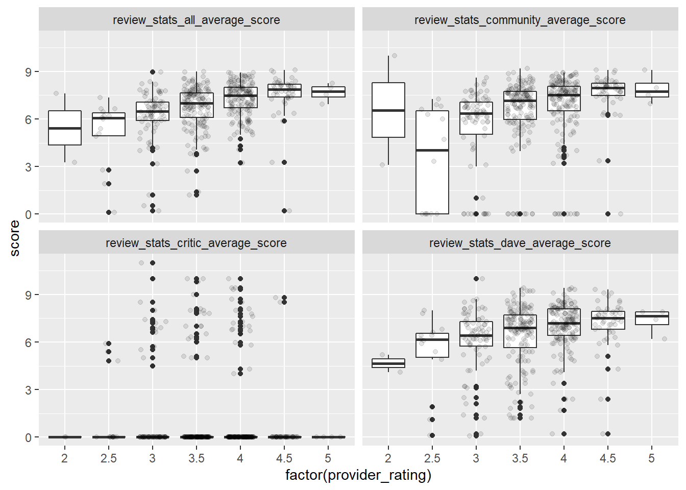
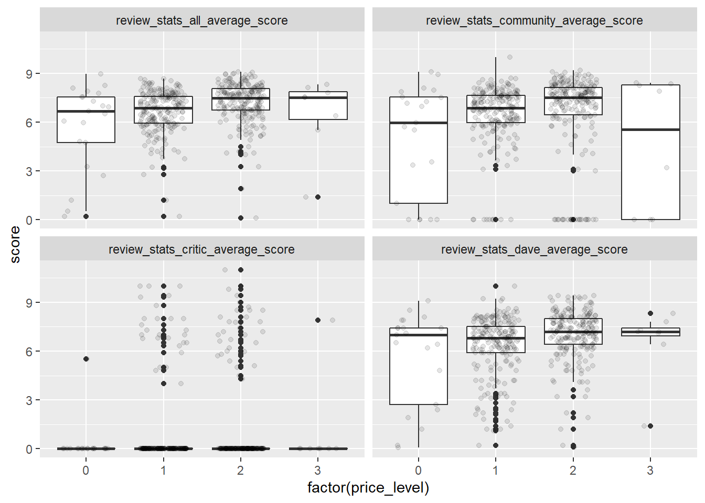

pizza_jared <- readr::read_csv("https://raw.githubusercontent.com/rfordatascience/tidytuesday/master/data/2019/2019-10-01/pizza_jared.csv")
pizza_barstool <- readr::read_csv("https://raw.githubusercontent.com/rfordatascience/tidytuesday/master/data/2019/2019-10-01/pizza_barstool.csv")
pizza_datafiniti <- readr::read_csv("https://raw.githubusercontent.com/rfordatascience/tidytuesday/master/data/2019/2019-10-01/pizza_datafiniti.csv")location <- pizza_datafiniti %>%
#remove the duplicates in dataset
distinct(longitude, latitude, .keep_all = TRUE) %>%
# Not look at AK or HI state
filter(!province %in% c('AK', 'HI')) %>%
#Correct some restaurant name
mutate(name = str_remove(name, "[']")) %>%
mutate(name = replace(name, name=="Papa Murphys Pizza", "Papa Murphy's"))number_state <- location %>%
group_by(name, province) %>%
summarise(number = n()) %>%
select(-number) %>%
summarise(number_state= n()) %>%
arrange(desc(number_state))
datatable(number_state%>% top_n(15, number_state), options = list(pageLength=10))Papa John Pizza are most popular, which is present at 24 states.
Little Caesars Pizza is present at 20 states.
Only 5 brand names are present at more than 4 states.
# calculcate the total number of restaurants for a specific name
namesum <- location %>%
group_by(name) %>%
summarise(total = n()) %>% #total is total number of restaurants with a specific name
arrange(desc(total))
datatable(namesum %>% top_n(25, total), options = list(pageLength=10))Papa John Pizza has the highest number of stores in US with 68 restaurants, following by Little Caesars Pizza with 38.
Only 8 pizza brands has more than 9 restaurants in US.
## # A tibble: 42 x 2
## province n
## <chr> <int>
## 1 NY 424
## 2 CA 255
## 3 PA 179
## 4 FL 163
## 5 TX 139
## 6 IL 125
## 7 OH 97
## 8 MI 94
## 9 AZ 70
## 10 NC 69
## # ... with 32 more rowsThe states having the highest number of pizza restaurants is New York with 424.
The following is California with 255.
Only 6 states have more than 100 Pizza restaurants.
location1 %>%
filter(as.integer(fct_reorder(name, total, .desc = TRUE)) <= 9) %>%
mutate(name = glue::glue("{name} ({total})"),
name = fct_reorder(name, desc(total))) %>%
ggplot(aes(longitude, latitude, color=price_max))+
borders("state") +
geom_point(alpha=0.5) +
coord_map()+
facet_wrap( ~ name) +
theme_void() +
labs(title = "How pizza restaurant distributed in US and how max price changes by distribution",
subtitle = "Only 9 restaurants with the highest numbers were presented. Number of restaurants in parentheses.")
Papa Johns Pizza and Little Caesars Pizza, and Sbarro spreaded out in almost regions in US, except for parts of west and midwest.
Papa Murphys did not cover the Southeast and Northeast areas. In reverse, Pizza Hut and Jets Pizza covered Southeast and Northeast, but did not cover the remainder area.
Barros Pizza was only present at Arizona.
With the same brand, the maximum price of Hungry Howies Pizza and Barros Pizza varied by locations.
x1 <- location1 %>%
filter(as.integer(fct_reorder(name, total, .desc = TRUE)) <= 9) %>% distinct(name)
x2 <- pizza_jared %>% distinct(place)
sum(x2 %in% x1) # All of 9 restaurants are not in pizza_jared## [1] 0x3 <- pizza_barstool %>% distinct(name)
sum(x3 %in% x1) # All of 9 restaurants are not in pizza_barstool## [1] 0zipcode <- zipcode %>% select(zip, state) %>% mutate(zip = as.numeric(zip))
data2 <-pizza_barstool %>%
distinct(longitude, latitude, .keep_all = TRUE) %>%
filter(!is.na(longitude) & !is.na(latitude)) %>%
left_join(zipcode, by="zip") %>%
group_by(state) %>%
summarise(total= n(), long = mean(longitude), lat =mean(latitude),
mean_price= mean(price_level))
data2 %>%
ggplot(aes(long, lat, size=total, color= mean_price))+
geom_point()+
borders("state")+
coord_map() +
theme_void()
In the shared boder of New Jersey and New York, there were more than 200 pizza restaurants.
In Massachusetts, there were more than 50 pizza restaurants. The price of pizza in these places was cheap in average.
a1 <- pizza_barstool %>%
gather(key="type", value ="score", 11,14,17,20) %>%
select(-c(11,12,13,14,15,16,17,18))
a1 %>%
ggplot(aes(factor(provider_rating), score))+
geom_boxplot()+
geom_jitter(alpha=0.1, width=0.3)+
facet_wrap(~type)
a1 %>%
ggplot(aes(factor(price_level), score))+
geom_boxplot()+
geom_jitter(alpha=0.1, width=0.3)+
facet_wrap(~type)
Except for critic score, all scores seemed to increase when provider rating increased. Most of rating were for category of 3, 3.5, and 4 of provider_rating
Similarly, all scores seemed to increase when price level increased, except for critic score. Most of rating were for category 1 and 2 of price level.
For critic score, regardless of the provider_rating or price level, this score mainly graded as 0.